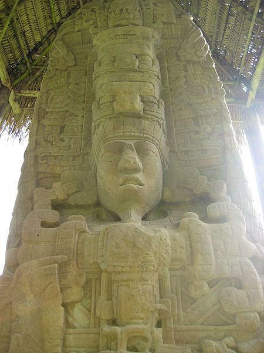
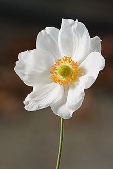
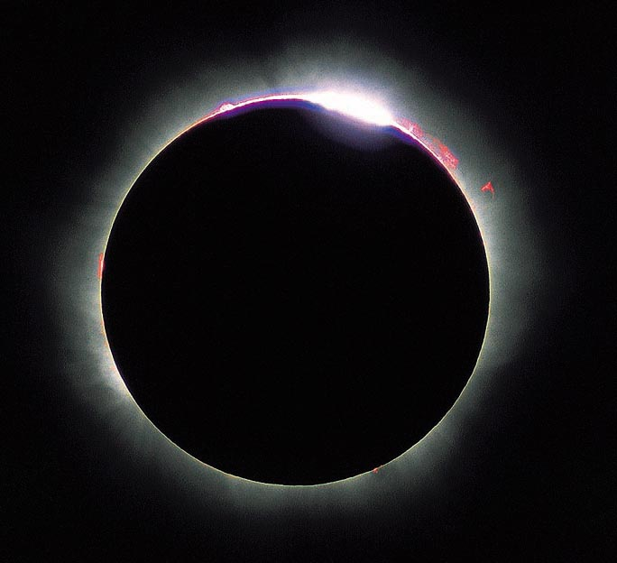

Today’s featured article
Quiriguá
Quiriguá is an ancient Maya archaeological site in the department of Izabal in south-eastern Guatemala. It is a medium-sized site covering approximately 3 square kilometres (1.2 sq mi) along the lower Motagua River, with the ceremonial center about 1 km (0.6 mi) from the north bank. During the Maya Classic Period, Quiriguá was situated at the juncture of several important trade routes. The site was occupied by 200, construction on the acropolis had begun by about 550, and an explosion of grander construction started in the 8th century. All construction had halted by about 850, except for a brief period of reoccupation in the Early Postclassic. Quiriguá shares its architectural and sculptural styles with the nearby Classic Period city of Copán, with whose history it is closely entwined. Quiriguá’s rapid expansion in the 8th century was tied to king K'ak' Tiliw Chan Yopaat’s military victory over Copán in 738. When the greatest king of Copán, Uaxaclajuun Ub'aah K'awiil or "18-Rabbit", was defeated, he was captured and then sacrificed in the Great Plaza at Quiriguá. Before this, Quiriguá had been a vassal state of Copán, but it maintained its independence afterwards. The ceremonial architecture at Quiriguá is quite modest, but the site’s importance lies in its wealth of sculpture, including the tallest stone monuments ever erected in the New World. … (read more)
Did you know…

- That Phil Packer (pictured), who was rendered paraplegic in 2008 by a rocket attack while serving in the Iraq War, has since rowed the English Channel, climbed El Capitan, and completed two London Marathons?
- That the 1909 Grand Isle hurricane, which killed more than 370 people, is the eleventh deadliest tropical cyclone in US history?
- That the historic Samson Pit silver mine in the Harz Mountains of Germany was, for a long time, the deepest mine in the world?
- That Lady Gaga loaned her costume designer to the American television series Glee for the episode "Theatricality"?
- That the manwha Recast was published not just in Korean, but also in German, French, and American English?
- That al-Mazar, a village depopulated during the 1948 Palestine War, was the burial site of many fallen soldiers in a 1260 battle in which Egyptian forces halted the Mongol raids into Palestine?
- That The Burnett Center academic building at Washington & Jefferson College is adorned with cast iron fleur-de-lis balusters that were salvaged from the former Hays Hall dormitory?
- That the 1982 play Intimate Exchanges by Alan Ayckbourn includes 31 scenes, 16 possible endings, 10 characters, and 8 major plot variations, all performed by only 2 actors?
Picture of the day
{kind=link}
Anemone hupehensis var. japonica, a type of buttercup in the genus Anemone. Anemone hupehensis is commonly called the "Japanese anemone", but it is actually native to China. The flower’s petals may be white, purple, or pink in color, with yellow stamens and green foliage. It produces three-parted leaves in clumps about 2 feet (0.61 m) wide. The plant may also be invasive or weedy in some areas, due to its tendency to spread quickly if left alone and the fact that it can survive in all but the hottest and driest conditions.
In the news

- At least 24 people are killed and 187 injured as Thai government forces clash with red shirt protesters.
- Space Shuttle Atlantis launches on its final scheduled mission, delivering the Rassvet module to the International Space Station.
- In association football, Atlético Madrid defeat Fulham F.C. to become the first winners of the UEFA Europa League.
- Afriqiyah Airways Flight 771 crashes near Tripoli, Libya, killing all but one person on board.
- After a general election, David Cameron of the Conservative Party becomes Prime Minister of the United Kingdom, heading a coalition government with Nick Clegg of the Liberal Democrats as Deputy Prime Minister.
- Viswanathan Anand defeats Veselin Topalov in a 12-game match to retain his World Chess Championship title.
- More than 100 people are killed and 350 others injured in a series of bomb and shooting attacks in Iraq.
On this day…
May 15: Armed Forces Day in the United States (2010); Independence Day in Paraguay; Teachers' Day in Mexico and South Korea; Nakba Day in Palestinian communities
{kind=link}
- 1602 – English explorer Bartholomew Gosnold became the first recorded European to visit Cape Cod.
- 1836 – English astronomer Francis Baily first observed "Baily’s beads", a phenomenon during a solar eclipse in which the rugged lunar limb topography allows beads of light to shine through.
- 1905 – Las Vegas was established as railroad town, after 110 acres (0.45 km2) owned by the San Pedro, Los Angeles and Salt Lake Railroad was auctioned off.
- 1928 – Mickey and Minnie Mouse made their film debut in the animated cartoon Plane Crazy.
- 1932 – Japanese Prime Minister Inukai Tsuyoshi was assassinated in a coup attempt by radical elements of the Imperial Japanese Navy.
- 1966 – After a policy dispute, South Vietnamese Prime Minister Nguyễn Cao Kỳ’s ruling junta launched a military attack on the forces of General Ton That Dinh, forcing him to abandon his command.
Other Languages
- Simple English
- العربية
- Bahasa Indonesia
- Bahasa Melayu
- Български
- Català
- Česky
- Dansk
- Deutsch
- Eesti
- Ελληνικά
- Español
- Esperanto
- Euskara
- فارسی
- Français
- Galego
- עברית
- Hrvatski
- Italiano
- 한국어
- Lietuvių
- Magyar
- Nederlands
- 日本語
- Norsk (bokmål)
- Norsk (nynorsk)
- Polski
- Português
- Română
- Русский
- Slovenčina
- Slovenščina
- Српски / Srpski
- Suomi
- Svenska
- ไทย
- Tiếng Việt
- Türkçe
- Українська
- 中文